A Tutorial for Time Series Classification Utility (TSCU)
Time Series Classification Utility (TSCU) is a collection of MATLAB® and C functions written to create an easy to use framework for classification of time series. If you have a collection of time series that needs to be classified, then continue reading this tutorial.
- Author : Huseyin Kaya
- Website: http://timewarping.org
- Sources: https://github.com/hkayabilisim/TSCU
Contents
- Installation
- Compiling MEX functions
- Loading a time series dataset
- Dataset format
- Classification with default setttings
- Using Dynamic Time Warping
- Using Constrained Dynamic Time Warping
- Changing band width in CDTW
- Displaying alignments
- Using Support Vector Machines (SVM) classification
- Comparing SVM with KNN under different alignments
Installation
TSCU is written in MATLAB®, so there is no setup; just download the package and run from MATLAB® Command Window. The complete package is available for free from GitHub. You have these two options:
Option 1 Use Download ZIP option to download the package in a zip file. If you choose this way you have to download the whole package to obtain the most current version of the utility.
Option 2 Another option is to use a command line to fetch the git repository. In this way, it is easy to update the package by using suitable git options. To check out the repository you can use the following command. If you don't have git on your command line, then you should install to the operating system. For further information, please take a look at http://git-scm.com.
# git clone https://github.com/hkayabilisim/TSCU.git
In both methods, you will end up with a directory named TSCU. Open your MATLAB® Command Window, and go to the TSCU/src directory. Now you are ready to run TSCU. But please be patient. Just read this tutorial and follow the step by step instructions.
Compiling MEX functions
In the TSCU/src directory, you will see some MEX functions and their precompiled versions for Windows XP SP3 and Mac OS X. If someshow you need to compile it again, than you should issue the following commands. If everything goes smoothly, then you will see the compiled mex files on the same directory. If not, you need to configure MEX. A good starting point is here.
mex tscu_saga_register.c tscu_saga_util.c mex tscu_saga_warp.c tscu_saga_util.c mex tscu_dtw.c
Building with 'Xcode with Clang'. MEX completed successfully. Building with 'Xcode with Clang'. MEX completed successfully. Building with 'Xcode with Clang'. MEX completed successfully.
Loading a time series dataset
For this tutorial we will use UCR time series repository which contains more than 40 different datasets. You can send an e-mail to Dr. Keogh to download all of them. For the time being, we will use the only one available for public access: Synthetic Control Dataset. If you haven't already downloaded it, then go ahead and run the following commands to fetch the dataset into the MATLAB workspace.
ucr_address='http://www.cs.ucr.edu/~eamonn/time_series_data'; trnfile='synthetic_control_TRAIN'; tstfile='synthetic_control_TEST'; urlwrite([ucr_address '/' trnfile],trnfile); urlwrite([ucr_address '/' tstfile],tstfile); trn=load(trnfile); tst=load(tstfile);
Before going on to the next steps, let me explain the meanings of the above commands. By using urlwrite functions, you fetch the remote files and save to the current directory. Then you load it with the load command. Synthetic Control Dataset has two parts, training and testing, so we are downloading both of them.
Dataset format
The format of the dataset is very simple.
<label_1> <x1_1> <x1_2> ... <x1_n> <label_2> <x2_1> <x2_2> ... <x2_n> ... <label_m> <xm_1> <xm_2> ... <xm_n>
Every line corresponds to a single time series. The first column is used to store the class labels. So the length of time series is the number of columns minus 1. It will be same for testing set since the length of all time series in a repository is constant.
n = size(trn,2)-1;
fprintf('The length of time series: %d\n',n);
The length of time series: 60
You can find the number of time series in each set by counting the number of rows. In this dataset, each set has 300 time series. But in general they are not required to be equal.
trnsize = size(trn,1); tstsize = size(tst,1); fprintf('The number of time series in traning: %d\n',trnsize); fprintf('The number of time series in testing: %d\n',tstsize);
The number of time series in traning: 300 The number of time series in testing: 300
Now lets find out the class labels. As I said before, the class labels are in the first column. You can determine the class labels by using unique. In this dataset, there are 6 different class labels: 1,2,3,4,5 and 6.
labels=unique(trn(:,1)); fprintf('The unique labels: %s\n',num2str(labels','%2d'));
The unique labels: 1 2 3 4 5 6
If you are curious and want to see at least one of the time series, than you can always use plot function. Here I will plot all of the time series in the training set. I know that there are 6 classes in this dataset, So I will use a 2x3 subplot figure. For each class I find the time series belonging to that class by using trn(:,1)==i. Here I use the first column because it contains the labels. Then I plot the time series starting from the second column to the end. You can see the class names on top of each plot. As you see, the class names are self-explaining.
figure
classnames={'normal' ,'cyclic', 'increasing',...
'decreasing','upward shift','downward shift'};
for i=1:6
subplot(2,3,i);
plot(trn(trn(:,1)==i,2:end)','k');
xlim([1 n]);
box on;
title(sprintf('%s class [label:%d]',classnames{i},i));
end
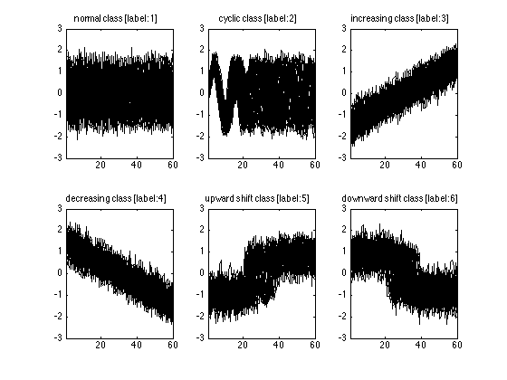 Classification with default setttings
We have a time series dataset, so we are ready to do a classification by using the default settings. This is very simple, just run the function tscu by giving training and testings sets in the arguments. In order to use this function, you have to be in the TSCU/src directory or the directory TSCU/src should be on your path. Here, I assume you are in TSCU/src directory.
tscu(trn,tst);
Size of training set.....................: 300
Size of testing set......................: 300
Time series length.......................: 60
Classification method....................: K-NN
Alignment method.........................: NONE
Displaying input data....................: no
No cross validation is chosen............: 0
Displaying alignments....................: none
Dumping distance matrix..................: no
Class information........................: 1 [TRN: 50 TST: 50]
Class information........................: 2 [TRN: 50 TST: 50]
Class information........................: 3 [TRN: 50 TST: 50]
Class information........................: 4 [TRN: 50 TST: 50]
Class information........................: 5 [TRN: 50 TST: 50]
Class information........................: 6 [TRN: 50 TST: 50]
Overall Accuracy.........................: 0.880
Overall Error............................: 0.120
Producer Accuracy........................: 0.440 1.000 0.980 1.000 0.940 0.920
User Accuracy............................: 1.000 0.833 0.891 0.862 0.887 0.885
Kappa....................................: 0.856
Z-value..................................: 5.439
Confusion matrix.........................:
Confusion matrix
1 2 3 4 5 6 UA TO
1 22 0 0 0 0 0 1.000 22
2 10 50 0 0 0 0 0.833 60
3 3 0 49 0 3 0 0.891 55
4 4 0 0 50 0 4 0.862 58
5 5 0 1 0 47 0 0.887 53
6 6 0 0 0 0 46 0.885 52
PA 0.440 1.000 0.980 1.000 0.940 0.920
TO 50 50 50 50 50 50 300
Classification time (sec)................: 10.56
The end of TSCU..........................: FINISHED
If you see an output similar to the above, then you are in a right track. By default TSCU provides several information lines explaining what is going on during classification. Here I like to explain some of them.
Size of training/testing set: It is good to know the size of the dataset. For example, if it is too big, then I may decide to use parallel programming feature.
Time series length: It is same for all time series in a repository. Actually, the classification and alignment algorithms in TSCU can deal with varying time series length. But the convention in UCR repository is to keep it fixed.
Classification method: By default, 1-nearest neighbor algorithm is used. Another option is to use Support Vector Machine (SVM) which will be explained in later sections.
Alignment method: Here you see NONE which is equivalent to say there is no alignment between time series. Other options are DTW, CDTW, SAGA and CREG which will be explained later.
Displaying input data: Sometimes you may need to display the input data to better understand the dataset or put in a document or whatever.
Class information: Displays the distribution of time series in the training and testing sets.
Overall Accuracy: This is perhaps the most important output of TSCU. Here you may want to see a number close to to 1. In this example it is 0.88 (88%). In the output, there are other performance evaluation metrics which I will cover later.
Using Dynamic Time Warping
We know that, correcting time shifts between time series increases the performance of time series classification. Dynamic Time Warping (DTW) is the most well known alignment method in the literature. Can we increase the overall accuracy if we use DTW? Let's use the option Alignment and see what happens.
If you see an error message similar to the below, than you need to compile MEX files. Please consult to the Installation section in the beginning of this tutorial.
Undefined function 'tscu_dtw' for input arguments of type 'double'.
tscu(trn,tst,'Alignment','DTW');
Size of training set.....................: 300
Size of testing set......................: 300
Time series length.......................: 60
Classification method....................: K-NN
Alignment method.........................: DTW
Displaying input data....................: no
No cross validation is chosen............: 0
Displaying alignments....................: none
Dumping distance matrix..................: no
Class information........................: 1 [TRN: 50 TST: 50]
Class information........................: 2 [TRN: 50 TST: 50]
Class information........................: 3 [TRN: 50 TST: 50]
Class information........................: 4 [TRN: 50 TST: 50]
Class information........................: 5 [TRN: 50 TST: 50]
Class information........................: 6 [TRN: 50 TST: 50]
Overall Accuracy.........................: 0.993
Overall Error............................: 0.007
Producer Accuracy........................: 0.960 1.000 1.000 1.000 1.000 1.000
User Accuracy............................: 1.000 0.980 1.000 1.000 0.980 1.000
Kappa....................................: 0.992
Z-value..................................: 24.884
Confusion matrix.........................:
Confusion matrix
1 2 3 4 5 6 UA TO
1 48 0 0 0 0 0 1.000 48
2 1 50 0 0 0 0 0.980 51
3 0 0 50 0 0 0 1.000 50
4 0 0 0 50 0 0 1.000 50
5 1 0 0 0 50 0 0.980 51
6 0 0 0 0 0 50 1.000 50
PA 0.960 1.000 1.000 1.000 1.000 1.000
TO 50 50 50 50 50 50 300
Classification time (sec)................: 16.36
The end of TSCU..........................: FINISHED
As you see, the overall accuracy is increased to 99.3%. This is an important improvement in the classification. Let's take a closer look at confusion matrices. If you sum the off-diagonal elements of a confusion matrix, you can obtain the number of misclassification. In case of DTW it is only 2. Whereas the number of misclassifications in the previous case (no alignment) was 36. By looking at this dramatic change, we can say that, using an alignment method improves classification performance.
On the other hand DTW is a bit slower than previos case (no alignment) if you look at the classification times. This is understandable as DTW requires more calculations than measuring standard Euclidean distance.
Using Constrained Dynamic Time Warping
This time I changed alignment method and used Constrained Dynamic Time Warping (CDTW). This is achieved by changing DTW with CDTW. You can also append additional options to the tscu function. For example you can make TSCU to display the input data by using DisplayInputData option. It will plot all training and testing data grouped into class labels. So you will see 6 figures iwhich has two subplots in each.
The overall accuracy, when CDTW is used, is dropped to 98.7% but it is not a significant decrease. The number of misclassifications is only 4. So again we see a dramatic gain by using another alignment algorithm.
In the output, you should see a line containing DTW band width. The band width here refers to the width of the diagonal band in the distance matrix of two time series. CDTW is constrained because it is not allowed to work outside of this band. It is defined in percentage because the length of time series can vary widely between datasets. TSCU uses the default value of 6%. Other than the constraining band, CDTW is identical to DTW.
tscu(trn,tst,'Alignment','CDTW','DisplayInputData','yes');
Size of training set.....................: 300
Size of testing set......................: 300
Time series length.......................: 60
Classification method....................: K-NN
Alignment method.........................: CDTW
Displaying input data....................: yes
No cross validation is chosen............: 0
DTW band width (%).......................: 6.00
Displaying alignments....................: none
Dumping distance matrix..................: no
Class information........................: 1 [TRN: 50 TST: 50]
Class information........................: 2 [TRN: 50 TST: 50]
Class information........................: 3 [TRN: 50 TST: 50]
Class information........................: 4 [TRN: 50 TST: 50]
Class information........................: 5 [TRN: 50 TST: 50]
Class information........................: 6 [TRN: 50 TST: 50]
Overall Accuracy.........................: 0.987
Overall Error............................: 0.013
Producer Accuracy........................: 0.960 1.000 1.000 1.000 1.000 0.960
User Accuracy............................: 1.000 0.962 1.000 0.962 1.000 1.000
Kappa....................................: 0.984
Z-value..................................: 17.514
Confusion matrix.........................:
Confusion matrix
1 2 3 4 5 6 UA TO
1 48 0 0 0 0 0 1.000 48
2 2 50 0 0 0 0 0.962 52
3 0 0 50 0 0 0 1.000 50
4 0 0 0 50 0 2 0.962 52
5 0 0 0 0 50 0 1.000 50
6 0 0 0 0 0 48 1.000 48
PA 0.960 1.000 1.000 1.000 1.000 0.960
TO 50 50 50 50 50 50 300
Classification time (sec)................: 14.21
The end of TSCU..........................: FINISHED
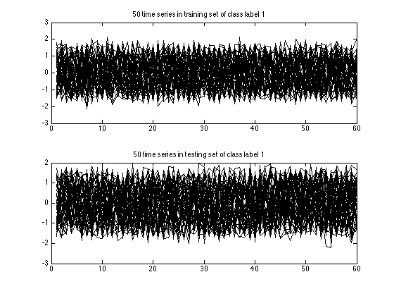 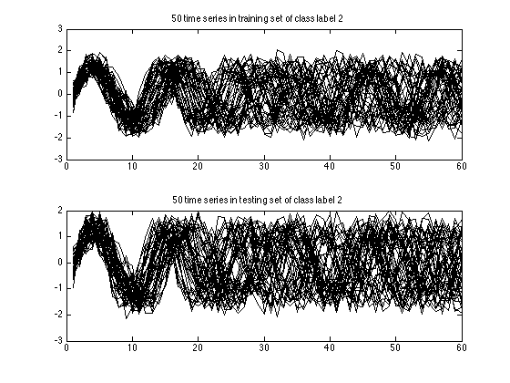 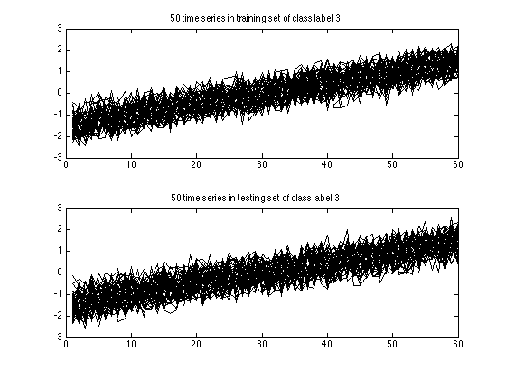 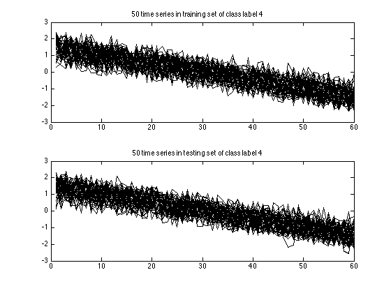 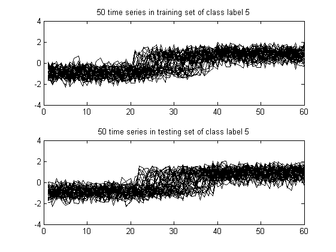 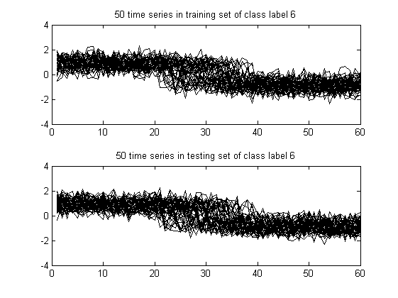 Changing band width in CDTW
You can change the band width used in Constrained Dynamic Time Warping (CDTW) by using DTWbandwidth option. Here I will set it to 100% which is equivalent to using DTW. But this time, I want to get rid of information messages. To do this, you can use LogLevel option. By setting it to Alert, you won't get Info messages which is the default for LogLevel. We prevented the info messages, but how will I know the results? You should assign the output to a variable. The output variable is simply a structure containing all the information. Now let's run it. You should obtain the same accuracy as DTW: 99.3%.
out=tscu(trn,tst,'Alignment','CDTW','LogLevel','Alert','DTWbandwidth',100); fprintf('Overall accuracy : %8.3f\n',out.perf.OA);
Overall accuracy : 0.993
Displaying alignments
In time series classification, a distance calculation between any two time series requires an alignment. Depending on the size of the dataset, the number of alignments could be millions. In our Synthetic Control Dataset case, there are 300 time series in each training and testing sets. The default classification algorithm is 1-NN, so there will be 300x300=90000 distance calculations. This means that 90000 different alignments will take place.
In some cases, you may want to analyze a specific alignment. For instance you may want to display the warping functions of your alignment method. Whatever the reason, you can display a specific alignment by using DisplayAlignment option. But you should define which time series do you want. For this we use a cell with elements. In the first element you should give the indexes of time series in the training set as an array. Likewise in the second array, you specify the indexes of time series in the testing set. I should give an example. Let's say I want to display the alignment between the 42nd time series in the training set and the 142nd element in the testing set, then I should use the following cell.
{42,142}A side note here: if you use too many options in one line, then you can wrap the line by using .... I still don't want to see the info messages. So I used a proper log level.
Using DisplayAlignment option, you will produce 4 figures for each alignment:
- original signals: the time series before alignment are displayed. Here the time series in the training set is a normal class, whereas the time series in the testing set is an increasing trend class.
- aligned signals: the time seris after alignment are displayed. Please note that the length of aligned signals is greated than original signals. This is a well known feature of DTW. Indeed the length is equal to the length of the warping path in the next figure.
- warping path: this is the warping path obtained by using CDTW. It lies aound the digonal of the distance matrix.
- mapping between the time series: By using the warping path, it is very easy to create a mapping between time series. This mapping does not have to be one-to-one.
tscu(trn,tst,'Alignment','CDTW','LogLevel','Alert',... 'DisplayAlignment',{42,142});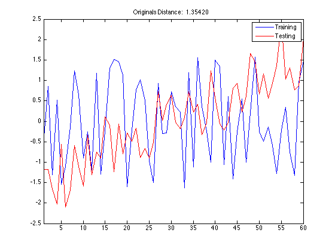 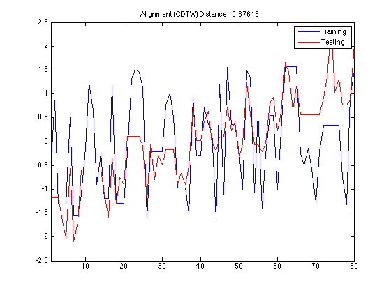 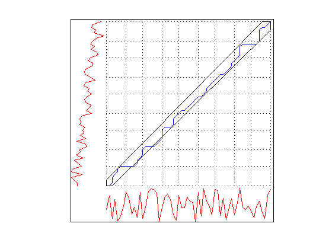 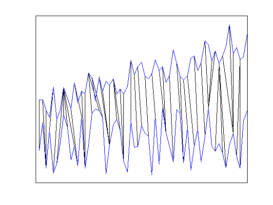
Using Support Vector Machines (SVM) classification
From the beginning, we have been using Nearest Neighbor classification scheme which is the default classifier in TSCU. However you have an alternative: Support Vector Machines (SVM). If you want to give it a try, you should use the option Classifier. The default kernel type of SVM is linear with C=10.
The implementation of SVM is based on the MATLAB® scripts in the book "Support Vector Machines for Antenna Array Processing and Electromagnetics", Manel Martinez-Ramon, Christos G. Christodoulou, Morgan & Claypool Publishers, 2006. ISSN 159829024X
tscu(trn,tst,'Classifier','SVM');
Size of training set.....................: 300
Size of testing set......................: 300
Time series length.......................: 60
Classification method....................: SVM
SVM kernel type..........................: linear
Alignment method.........................: NONE
Displaying input data....................: no
No cross validation is chosen............: 0
Displaying alignments....................: none
Dumping distance matrix..................: no
Class information........................: 1 [TRN: 50 TST: 50]
Class information........................: 2 [TRN: 50 TST: 50]
Class information........................: 3 [TRN: 50 TST: 50]
Class information........................: 4 [TRN: 50 TST: 50]
Class information........................: 5 [TRN: 50 TST: 50]
Class information........................: 6 [TRN: 50 TST: 50]
Overall Accuracy.........................: 0.927
Overall Error............................: 0.073
Producer Accuracy........................: 0.800 1.000 0.920 0.920 0.960 0.960
User Accuracy............................: 1.000 0.833 0.958 0.958 0.923 0.923
Kappa....................................: 0.912
Z-value..................................: 7.152
Confusion matrix.........................:
Confusion matrix
1 2 3 4 5 6 UA TO
1 40 0 0 0 0 0 1.000 40
2 10 50 0 0 0 0 0.833 60
3 0 0 46 0 2 0 0.958 48
4 0 0 0 46 0 2 0.958 48
5 0 0 4 0 48 0 0.923 52
6 0 0 0 4 0 48 0.923 52
PA 0.800 1.000 0.920 0.920 0.960 0.960
TO 50 50 50 50 50 50 300
Classification time (sec)................: 1.12
The end of TSCU..........................: FINISHED
Let's analyze the results. First of all it took around 1 seconds to do all the classification whereas KNN required approximately 10 seconds. So it is clearly faster than KNN. But remember the exact running times will change depending on the number and speed of the processors you have. Don't be surprized if you have very different running times. If you have a fast CPU, both SVM and KNN may run under a second. If that is the case you may not notice a difference between the two. On the other hand, if you have a slow PC, then the difference between the two will be dramatic.
The next thing to look at is the accuracy. The overall accuracy of SVM 92.7% which is higher than KNN (remember that, it was 88%). If you compare the confusion matrices, you will see that SVM is better from KNN at discriminating the first class from other classes. However it is still having a hard time to separete the first class from the second as it makes 10 misclassifications (see the 2nd row and first column entry of the confusion matrix). Other than that SVM is make only 4 misclassifications.
Comparing SVM with KNN under different alignments
We compared SVM with KNN without using alignment or technically speaking alignment with NONE. In this case, SVM seems better than KNN in terms of both speed and accuracy. But what about if I use other alignments such as DTW and CDTW? I will run TSCU with different options and prepare a table similar to the below.
Alignment
-------------------
Classification NONE DTW CDTW
KNN ... ... ...
SVM ... ... ...svm_none=tscu(trn,tst,'Classifier','SVM','LogLevel','Alert'); svm_dtw =tscu(trn,tst,'Classifier','SVM','Alignment','DTW',... 'LogLevel','Alert'); svm_cdtw=tscu(trn,tst,'Classifier','SVM','Alignment','CDTW',... 'LogLevel','Alert'); knn_none=tscu(trn,tst,'LogLevel','Alert'); knn_dtw =tscu(trn,tst,'LogLevel','Alert','Alignment','DTW'); knn_cdtw=tscu(trn,tst,'LogLevel','Alert','Alignment','CDTW');
I have the results. Now, in order to create the table I mentioned above, I have to use these ugly looking commands. Sorry! You don't have to use these commands but I prefer to create these kind of text tables.
fprintf('%12s %-17s\n','','Alignment'); fprintf('%12s %s\n','','-----------------'); fprintf('%12s %-5s %-5s %-5s\n','Classifier','NONE','DTW','CDTW'); fprintf('%12s %3.1f%% %3.1f%% %3.1f%%\n','KNN',100*knn_none.perf.OA,... 100*knn_dtw.perf.OA,100*knn_cdtw.perf.OA); fprintf('%12s %3.1f%% %3.1f%% %3.1f%%\n','SVM',100*svm_none.perf.OA,... 100*svm_dtw.perf.OA,100*svm_cdtw.perf.OA);
Alignment
-----------------
Classifier NONE DTW CDTW
KNN 88.0% 99.3% 98.7%
SVM 92.7% 91.7% 91.7%
As you see, if I don't use alignment, then SVM is definitely better than KNN. But using alignment does not improve the accuracy of SVM. Contrary it slightly decreases the accuracy. So, I can claim that the classification accuracy depends not only on the classification method, but also on the alignment method. The two are tighly coupled. A third dependancy is data. The performance of classification algorithms heavily depends on the type of data. In the above example, KNN with NONE alignment is better than SVM with NONE alignment. But you find a dataset for which the opposite is true. In summary, the classification accuracy depends on three main factors:
- classification method (KNN,SVM)
- alignment method (NONE,DTW,CDTW)
- data (Synthetic Control,...)